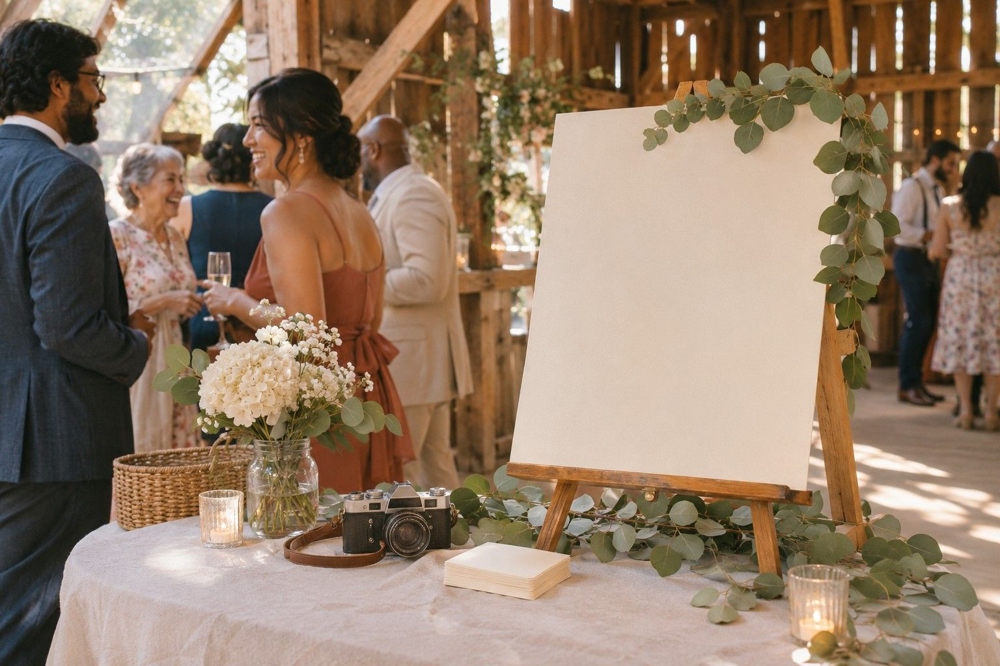
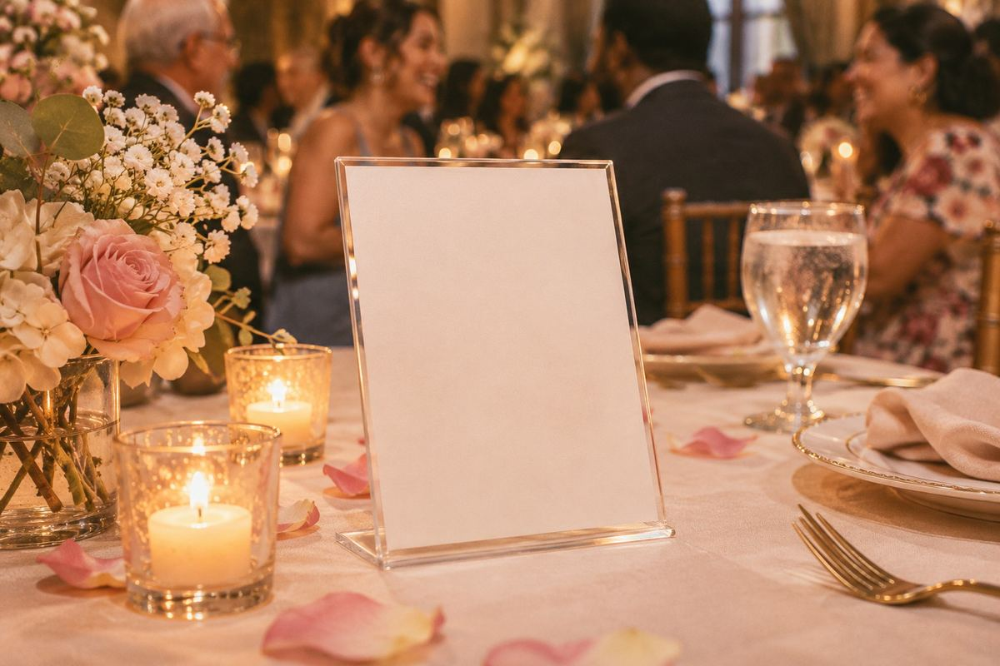

Wedding QR Code Sign for Photos: 45 Wording Ideas
Copy-ready lines by tone, plus the size, placement and testing rules that get scans.

Short answer: A good wedding QR code sign for photos says three things: what to do (“Scan to share your photos”), why (“you see moments we miss”), and what happens next (“the album opens tomorrow at 10 a.m.”). Print the code 2 to 3 inches wide on table cards and up to about 7.5 inches on a welcome sign, dark on light, with a short backup code underneath.
On the day, the sign is the whole system. If the words are vague or the code is too small, guests walk past it and the photos stay scattered across a hundred camera rolls. Below are 45 wordings you can copy, grouped by tone, then the rules for size, contrast, placement and testing that decide whether anyone actually scans. Sam and Priya are placeholders: swap in your own names.
What should a wedding QR code sign for photos say?
Every sign that works has the same four parts, from biggest to smallest:
- A headline with one verb and one benefit. “Scan to share your photos” beats “Wedding photo upload” because it tells people what to do. Keep it under eight words.
- The QR code itself, big, on a plain light background.
- One instruction line that answers the first worry: “Open your phone camera and point it here.” Add “no app or account needed” only if that’s true for the service you picked.
- A what-happens-next line: when and where guests will see the photos. “The album opens Sunday at 10 a.m.” Many signs skip this line, and it’s the one that makes people come back the next day.
That order holds for any wedding photo sharing sign, from a printed template to a hand-lettered mirror. Under all of it, in small type, print a backup: a short link or join code for anyone whose camera won’t read the code. Leave everything else off. Logos, long URLs, paragraphs about privacy and three different hashtags all compete with the one thing you want people to do.
Here is the full formula as a sign you can copy:
Share the day through your eyes
[QR code]
Open your phone camera and scan. Type your name and start shooting.
Photos stay hidden until tomorrow at 10 a.m. Then everyone sees the whole roll.
Join code: ________ · Sam & Priya · June 12
If you haven’t decided where the photos will land yet (a shared album, an upload folder or a guest camera app), settle that first with our comparison of ways to collect photos from wedding guests. The wording below works for any of them; just keep the promises on the sign true for your choice.

45 wedding QR code sign wording ideas
Pick one headline per sign and, if there’s room, one line from the reveal group. Mixing is fine: a classic welcome sign with playful table cards reads as intentional, not inconsistent.
Classic and romantic
- “Help us capture our day. Scan to add your photos to our wedding album.”
- “You see the moments we’ll miss. Scan the code and share them with us.”
- “Our photographer has the vows. You have everything else. Scan to share your photos.”
- “Be part of our album. Scan, snap and share.”
- “Every photo you take tonight becomes part of our story. Scan to add yours.”
- “With love, Sam & Priya. Please scan to share the photos you take today.”
Playful and funny
- “Now hiring: wedding photographers. Pay: cake. Scan to start your shift.”
- “Paparazzi wanted. Scan here and shoot all night.”
- “Caught Grandpa on the dance floor? We need evidence. Scan to share.”
- “Your camera roll, our wedding album. Send the good ones (and the blurry ones).”
- “Shoot first. Explain at brunch.”
- “Scan. Shoot. Repeat until the DJ stops.”
- “Our photographer leaves at 10. You don’t. Scan to take over.”
Rhyming
- “Take a photo, take a few, then scan the code to share them too.”
- “We said ‘I do,’ now it’s up to you: scan to share the day from your view.”
- “From the first dance to the very last song, scan the code and shoot along.”
- “Smile, snap, scan, share. That’s all we ask while you’re there.”
- “Capture the laughs, the toasts and the cake, then scan to share every shot that you take.”
Short lines for table cards
- “Scan to share your photos.”
- “Got a great shot? Scan here.”
- “Your photos, our album. Scan me.”
- “Add your shots to our roll.”
- “Table 6, we want your view. Scan here.”
- “Scan, shoot, share with Sam & Priya.”
- “One scan. Every guest’s photos in one place.”
Disposable-camera style
These suit a disposable camera app or any shared roll with a shot limit and a wait before anyone sees the photos.
- “One roll. Every guest. Scan to load your camera.”
- “Tonight your phone is a disposable camera. Scan to get your film.”
- “12 shots each. Make them count.” (Match the number to your app’s setting.)
- “No peeking, no retakes. Just shoot.”
- “Wind it, shoot it, wait for it. Scan to join our roll.”
Reveal-the-next-morning lines
These go under the headline and tell guests what happens next. Use one when your photos stay hidden until a set time.
- “Nobody sees a photo until tomorrow morning. Not even us.”
- “Shoot all night. The roll develops at brunch.”
- “Your photos stay hidden until 10 a.m. tomorrow, then everyone sees the whole roll at once.”
- “Tonight you shoot. Tomorrow we all look together.”
- “The film develops Sunday at 10 a.m. Set an alarm.”
- “What happens on the dance floor stays sealed until breakfast.”
Bilingual signs
Put the second language directly under the English line in the same size, not in tiny type at the bottom. Ask a family member who speaks the language to check the wording, especially formal versus informal “you.”
- Spanish: “Scan to share your photos · Escanea para compartir tus fotos”
- French: “Scan to share your photos · Scannez pour partager vos photos”
- Portuguese: “Scan to share your photos · Escaneie para compartilhar suas fotos”
- Hindi: “Scan to share your photos · अपनी तस्वीरें साझा करने के लिए स्कैन करें”
- Simplified Chinese: “Scan to share your photos · 扫码分享您的照片”
For an unplugged ceremony
If you’ve asked for phones away during the vows, the sign at the ceremony should say “later,” and the QR code should live at the reception.
- “Phones away for the vows, please. Your camera gets a job at the reception.”
- “Unplugged ceremony, plugged-in party. The code is on your table.”
- “Our photographer has the ceremony covered. From cocktail hour on, it’s your turn.”
- “Be here now, shoot later. Scan at your table after the ‘I do.’”
How to design a QR sign guests actually scan
Wording gets people to lift their phone. Design decides whether the phone reads the code on the first try, in dim light, from a chair.
- Dark code, light background. Black or deep navy on white or cream scans most reliably. Gold foil and mirror acrylic look lovely and reflect string lights straight into the camera, so keep the code itself plain.
- Back clear acrylic. On a see-through sign, print the code on a white square or add white vinyl behind it, or the tablecloth shows through and the contrast drops.
- Leave the margin empty. Denso Wave, the company behind the QR code, says it needs a clear margin four modules wide on every side (a module is one of the tiny squares). Don’t let eucalyptus art or a frame creep into that border.
- Plain fonts for instructions. Script is fine for your names. The instruction line should be in a simple font at 12 points or larger on a table card, because people read it by candlelight.
- Matte paper beats gloss. Glossy cards bounce the overhead light back at the lens.
- One action per sign. If you also have a hashtag, give it its own small line or its own sign. Our guide to wedding hashtag ideas explains why a hashtag works best as a backup to a private photo collection, not as the main ask.
How big should the QR code be on a wedding sign?
Use the 10:1 rule, then add a margin for dim light. Bitly’s QR guide puts the distance-to-size ratio at about 10:1, with a minimum of about 0.8 inches (2 cm), and the QR platform Uniqode suggests adding 20 to 30% for poor lighting and awkward angles, which describes most receptions. In practice: divide how far away the guest will be by 10, then add about a quarter.
| Sign | Typical size | Guests scan from | QR code width |
|---|---|---|---|
| Place card or favor tag | 3.5 × 2 in | 8–12 in, in hand | 1–1.5 in |
| Table card or tent | 5 × 7 in | 16–24 in, seated | 2–3 in |
| Mirror cling | 4 × 4 in | 1–1.5 ft | 1.5–2.5 in |
| Bar or photo booth sign | 8 × 10 in | 2–3 ft | 3–4.5 in |
| Welcome sign on an easel | 18 × 24 or 24 × 36 in | 3–5 ft | 4.5–7.5 in |
The math behind the table: 24 inches away ÷ 10 = 2.4 inches, plus a quarter is 3 inches; 5 feet (60 inches) ÷ 10 = 6 inches, plus a quarter is 7.5 inches. If a guest has to stand on tiptoe or lean over a centerpiece to scan, the code is too small or too far away.
Where to put QR code signs at a wedding
Put a code anywhere guests stand still with a free hand. Those are the moments people pull out a phone anyway.
- The welcome or escort-card table. Everyone passes it, and cocktail hour is when hands are free and the light is good.
- Every dinner table. Guests sit for an hour or more. One card in the middle of each table, or a small card at each place setting.
- The bar. A line of people waiting with phones already out is the best audience you’ll have all night.
- The photo booth or lounge. People who stop at a booth are already in a photo mood.
- The restroom mirror. A small cling invites the mirror selfie that ends up being everyone’s favorite.
- The dessert table. Right before the cake cutting, when a crowd gathers.
- The after-party. If the night moves to a second venue, bring two signs with you.
Skip the ceremony aisle if you want an unplugged ceremony, and keep codes off anything that gets thrown away early, like napkins. A sign also works better with a voice behind it: one short announcement from the DJ or best man reaches the guests who never look down at the table. Our guide on how to ask wedding guests to share photos has a 20-second script.
How many QR code signs do you need?
The rule of thumb: one card per table, plus one larger sign at each place people wait. Say your tables seat 10 guests each. Here’s what to print, including about 10% spares for spilled drinks and the card that leaves in someone’s bag:
| Guests | Tables of 10 | Table cards | Larger signs | Print in total |
|---|---|---|---|---|
| 50 | 5 | 5 | 2 (welcome, bar) | 8 |
| 100 | 10 | 10 | 3 (welcome, bar, booth) | 15 |
| 150 | 15 | 15 | 3 | 20 |
| 200 | 20 | 20 | 4 (add a second bar) | 27 |
| 250 | 25 | 25 | 5 (add a second entrance) | 33 |
Smaller tables of 8 mean more cards: 100 guests at tables of 8 is 13 tables, so 13 cards. If the budget is tight, cut the larger signs before the table cards. A code at eye level while people sit does more than one beautiful easel by the door.
Test the sign before you print 30 of them
A sign can fail even when the link behind it works, so test the printed sign, not just the file on your screen.
- Print one proof at full size, on the paper or acrylic you’ll actually use.
- Scan it with an iPhone and an Android phone from the real distance: seated across the table, and standing a few feet from the easel. On an iPhone, open Camera in Photo mode, point it at the code and tap the link that appears; most Android phones read codes from the camera app or Google Lens.
- Dim the lights and tilt the card. Candlelight and string lights are where small codes and shiny finishes fail.
- Type the backup code by hand to make sure it’s readable and correct.
- Hand it to your least techy relative without explaining anything. If they get stuck, the instruction line needs work.
To test the link itself (sign-in walls, dead links, codes tied to a free trial, slow pages on mobile data), follow the checklist in our step-by-step guide to a QR code for wedding photos.
Making the sign for a Filmsera film
If you use Filmsera, the code comes from the film itself. Create the film in the iPhone app, name it, and pick when it develops. The “Tonight”, “Tomorrow” and “In 3 days” presets all develop at 9 p.m., so for a 10 a.m. reveal like the one on the sign below, choose “Custom” and set the date and time. The invite card that appears has a QR code, a share code and a link. Tap Save QR to drop the code into your own design, or Save card to print the ready-made card. The free printable table sign in our wedding guest photo plan has a box sized for the code and a line for the join code.

Guests scan with their phone camera, type a name and start shooting. They can join and shoot from their phone’s browser, with no app or account, or open the film in the free Filmsera app on iPhone. Android guests join in the browser. Anyone whose camera won’t read the code can type the 8-character code instead, so print it under the QR.

Because every photo stays hidden until the reveal, the what-happens-next line matters more than usual. Write the exact time on the sign. A sign for a Filmsera wedding film might read:
Our wedding camera
Scan with your phone camera, type your name and shoot. You can join in your browser, with no app or account.
Every photo stays hidden until Sunday at 10 a.m. Then the whole roll appears for everyone, tagged with who took each shot.
Join code: ________
A few honest limits, as of November 2026. The host needs an iPhone (iOS 17 or later) to create the film. Browser guests take photos only; video clips need the app and a Celebration or Wedding film. And the film stays sealed until the reveal time you set, so put that time on the sign. More on how it runs on the day is on our Filmsera for weddings page.
Filmsera gives every wedding film a printable QR code, and guests on any phone can join from the browser while the photos stay sealed until the reveal you pick. Get Filmsera on the App Store
FAQ
What do you write on a QR code sign for wedding photos?
Write a short headline with one verb (“Scan to share your photos”), one instruction line (“Open your phone camera and point it here”), and one line about what happens next, such as when the album opens. Add a backup link or join code in small type. Leave off long URLs, logos and extra hashtags so the one action stands out.
How big should a QR code be on a wedding table sign?
About 2 to 3 inches wide on a 5 × 7 inch table card. The common rule is to make the code one tenth as wide as the scanning distance, then add 20 to 30% for dim light, so a guest sitting 2 feet away needs a code about 3 inches wide. Welcome signs read from 3 to 5 feet away need codes about 4.5 to 7.5 inches wide.
Can Android guests scan a wedding QR code?
Yes. Most Android phones read QR codes from the built-in camera app or Google Lens, and iPhones read them from the Camera app. What matters more is where the code leads. Test that the page opens in a normal browser on both kinds of phone, without a login wall or an app that only works on one platform.
Should the photo sign also show our wedding hashtag?
You can, but keep it secondary. One clear action is easier to follow than two competing ones. Hashtags only gather public posts, so put the QR code first and give the hashtag a small line underneath, or its own sign near the photo booth.
What if the QR code doesn’t scan on the day?
Print a short link or join code under every code so guests can type it. Ask one friend to be the go-to person for anyone who gets stuck, and keep the link in your phone so it can be texted on the spot. Small, glossy or low-contrast codes are the usual culprits, and a proof print catches all three.
Written by the Filmsera team
Filmsera is a shared disposable camera app for iPhone: create a film for your event, let guests join by QR code from the app or their phone's browser, and open the whole roll together at the reveal. Download on the App Store →
Photos in this article are illustrations created for Filmsera, not customer photos. App screenshots are from Filmsera on iPhone.